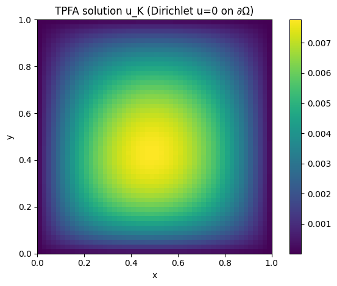
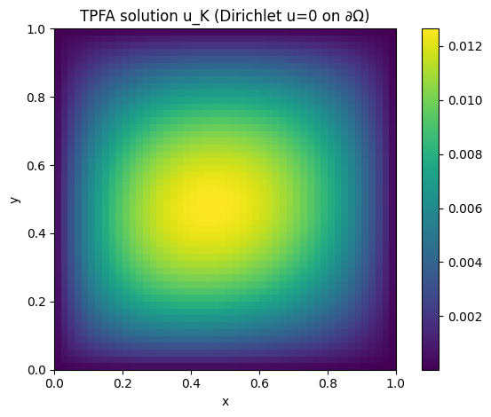
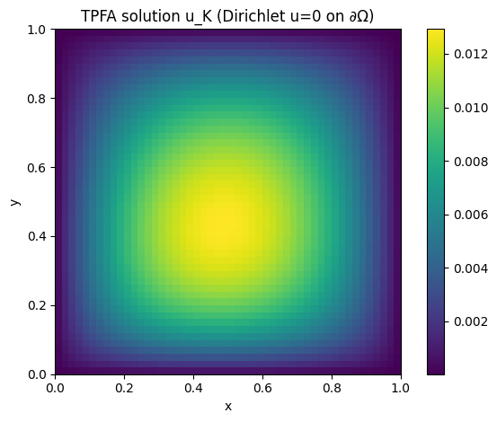

Tp 1 POD-Galerkin + TPFA
TP1
#Install package
import sys
!{sys.executable} -m pip install numpy
!{sys.executable} -m pip install matplotlib
# import packages
import numpy as np
import scipy.sparse as sp
import scipy.sparse.linalg as spla
import matplotlib.pyplot as plt
from scipy.interpolate import RegularGridInterpolator
import random
============================================================
TPFA (Two-Point Flux Approximation)
Find $u_h = (u_K)_{K \in M_h}$ such that for all $K$ in $T_h$:
$\sum_{\sigma \in F_K \cap F_{int}} \tau_{\sigma} (u_K - u_L)
- \sum_{\sigma \in F_K \cap F_{ext}} \tau_{\sigma} u_K = \int_K f(x) dx$
with Dirichlet boundary $u=0$ on $\partial \Omega$.
Here $\Omega=[0,1] \times [0,1]$. We use a cartesian mesh, with cell-centered FV.
$A(x,y;\mu) = 2 \mu_1 + \mu_2 \ sin(x+y) \ cos(xy)$
$f(x,y;\mu) = \mu_3 (1-y) + \mu_4 x \ (1-x)$
============================================================
$\tau_{\sigma}=|\sigma| \frac{A_K \ A_L} { A_L \ d_{K,\sigma} + A_K \ d_{L,\sigma} }$ on $F_{int}$ and $\tau_{\sigma}=|\sigma| \frac{A_K} { d_{K,\sigma} }$ on $F_{ext}$
1. Complete the following code:
# ============================================================
# TPFA (Two-Point Flux Approximation)
# ============================================================
##### Initialization #########################################
def A_fct(x, y, mu1, mu2):
# Diffusion parameter
return ...
def f_fct(x, y, mu3, mu4):
# Right-hand side term
return ...
def tau_sigma_int(AK, AL, sigma_len, dK, dL):
# tau_sigma = |sigma| * AK*AL / (AL*dK + AK*dL)
return ...
def tau_sigma_ext(AK, sigma_len, dK):
# tau_sigma = |sigma| * AK / dK
return ...
##### TPFA assembling #########################################
def assemble_tpfa(Nx=5, Ny=2, mu=(0.99, 0.8, 0.2, 0.78)):
mu1, mu2, mu3, mu4 = mu
dx, dy = ... , ...
volK = ... # area
# Cell centers x_K
xc = (np.arange(Nx) + 0.5) * dx
yc = (np.arange(Ny) + 0.5) * dy
Xc, Yc = np.meshgrid(xc, yc, indexing="ij") # like matrix indexing
#plt.plot(Xc, Yc, marker='o', color='k', linestyle='none')
# Fields sampled at x_K
A = ... # A(x_K;mu) shape of A: (5, 2)
f = ... # f(x_K;mu)
# Indexing K in T_h=(i,j) -> k
def idK(i, j):
return i + Nx * j
b = (f * volK).reshape(-1, order="F") # ∫_K f ≈ f(x_K)|K| with same indexing (i + Nx*j)
# Face geometry on Cartesian grid
# vertical faces (E/W), d_{K,sigma}
# horizontal faces (N/S), d_{K,sigma}
sigma_len_EW, d_EW = ... , ...
sigma_len_NS, d_NS = ..., ...
# ---------------------------------------
# Assemble by iterating over faces sigma
# ---------------------------------------
rows, cols, data = [], [], []
# 1) Interior faces F_int: add tau_sigma(u_K - u_L) to eq(K), and symmetric to eq(L)
# 1a) Vertical interior faces between K=(i,j) and L=(i+1,j)
for j in range(Ny): #Ny vertical edges
for i in range(Nx - 1): #Nx-2 vertical edges without external boundaries
K = (i, j)
L = (i + 1, j) # right neighbor
AK = A[K]
AL = A[L]
kK = idK(i, j)
kL = idK(i+1, j)
tau = tau_sigma_int(AK, AL, sigma_len_EW, d_EW, d_EW)
# Equation for K: +tau*u_K - tau*u_L
rows += [kK, kK] #line K,K
cols += [kK, kL] # col K,L (right neighbor)
data += [tau, -tau] #[K,L]
# Equation for L: +tau*u_L - tau*u_K
rows += [kL, kL] # symetric
cols += [kL, kK] # left neighbor
data += [tau, -tau]
# 1b) Horizontal interior faces between K=(i,j) and L=(i,j+1)
for j in ...: # For Ny=2, j=0 one edge S/N
for i in ...: # For Nx=5, 0....Nx-1 horizontal edge
K = ...
L = ...
kK = ...
kL = ...
AK = A[K]
AL = A[L]
tau = tau_sigma_int(...)
rows += [... , ...]
cols += [... , ...]
data += [... , ...]
rows += [... , ...]
cols += [... , ...]
data += [... , ...]
# 2) Boundary faces F_ext (Dirichlet u=0): add tau_sigma * u_K to eq(K)
# Left boundary (west faces) : i=0
for j in ...: # j=0,1
K = ...
kK = ...
tau = tau_sigma_ext(...)
rows.append(kK); cols.append(kK); data.append(tau)
# Right boundary (east faces) : i=Nx-1 =4
for j in ...: #0,1
K = ...
kK = ...
tau = tau_sigma_ext(...)
rows.append(kK); cols.append(kK); data.append(tau)
# Bottom boundary (south faces) : j=0
for i in range(Nx):#0,1,2,3,4
K = ...
kK = ...
tau = ...
rows.append(kK); cols.append(kK); data.append(tau)
# Top boundary (north faces) : j=Ny-1
for i in ...:
K = ...
kK = ...
tau = tau_sigma_ext(...)
rows.append(kK); cols.append(kK); data.append(tau)
# Build sparse system and solve
N=Nx*Ny
M = sp.csr_matrix((data, (rows, cols)), shape=(N, N))
return xc,yc,M,b
def solve_tpfa(M,b,Nx,Ny):
# Solve Mu=b
u = spla.spsolve(M, b)
# Back to (Nx,Ny) array with u_K at cell centers
U = u.reshape((Nx, Ny), order="F")
return U
#Draw one solution
mu = (0.99, 0.8, 0.2, 0.78)
xc, yc,M,b = ...
U = ...
plt.figure()
plt.title("TPFA solution u_K (Dirichlet u=0 on ∂Ω)")
plt.imshow(U.T, origin="lower", extent=[0, 1, 0, 1], aspect="equal")
plt.colorbar()
plt.xlabel("x"); plt.ylabel("y")
plt.tight_layout()
plt.show()
# ============================================================
# POD
# ============================================================
def Construct_RB(NumberOfSnapshots=50,Nx=50,Ny=50,NumberOfModes=10):
#Training set Ntrain = NumberOfSnapshots
print("number of modes: ",NumberOfModes) # N
mu = (0.99, 0.8, 0.2, 0.78) #first parameter
Snapshots=[]
#---------------------------------#
# Generate the snapshots #
#---------------------------------#
for i in range(NumberOfSnapshots):
_, _,M,b = ...
U = ...
Snapshots.append(U.flatten(order="F"))
mu = [...] #random coefficients in [0, 1]
#---------------------------------#
# POD #
#---------------------------------#
#(u,v)_L2=sum_K|K| u_k v_k
volK = ... #|K|
# snapshot correlation matrix C_ij = (u_i,u_j)
CorrelationMatrix = np.zeros((NumberOfSnapshots, NumberOfSnapshots))
for i, snapshot1 in enumerate(Snapshots):
for j, snapshot2 in enumerate(Snapshots):
if i >= j:
CorrelationMatrix[i, j] = ...
CorrelationMatrix[j, i] = ...
# Then, we compute the eigenvalues/eigenvectors of C (EigenVectors=alpha)
EigenValues, EigenVectors = np.linalg.eigh(CorrelationMatrix, UPLO="L") #SVD: C eigenVectors=eigenValues eigenVectors
idx = EigenValues.argsort()[::-1] # sort the eigenvalues
TotEigenValues = EigenValues[idx]
TotEigenVectors = EigenVectors[:, idx]
# retrieve N=NumberOfModes first eigenvalues
EigenValues = ...
EigenVectors = ...
#print("eigenvalues: ",EigenValues)
RIC = ... #must be close to 0
print("Relativ Information Content (must be close to 0): ",RIC)
ChangeOfBasisMatrix = np.zeros((NumberOfModes,NumberOfSnapshots))
for j in range(NumberOfModes):
ChangeOfBasisMatrix[j,:] = EigenVectors[:,j]/... #/ normalization
ReducedBasis = ...
# orthogonality test
...
## ROM L2 projection
def project_L2(u_full,Phi,Nx,Ny):
a = ...
u_proj = ...
return a, u_proj
mu = (0.99, 0.8, 0.2, 0.78)
...
xc, yc,M,b = assemble_tpfa(Nx=50, Ny=50,mu=mu)
U = solve_tpfa(M,b)
a,u_proj=project_L2(U,Phi,Nx,Ny)
u_proj=u_proj.reshape(50,50)
plt.figure()
plt.title("TPFA solution u_K (Dirichlet u=0 on ∂Ω)")
plt.imshow(u_proj.T, origin="lower", extent=[0, 1, 0, 1], aspect="equal")
plt.colorbar()
plt.xlabel("x"); plt.ylabel("y")
plt.tight_layout()
plt.show()

# POD-Galerkin
def solve_tpfa_rom(mu, Nx, Ny, Phi):
...
U_rom = u_rom.reshape((Nx, Ny), order="F")
return a, U_rom
mu = (0.6, 0.5, 0.2, 0.8)
...

# true sol
xc, yc,M,b = assemble_tpfa(Nx=50, Ny=50,mu=mu)
...
(2500,)

#### Convergence
#(u,v)_L2=sum_K|K| u_k v_k
mu = (0.6, 0.5, 0.2, 0.8)
# construct uref:
_,_, M, b = assemble_tpfa(Nx=500, Ny=500,mu=mu)
Uref = solve_tpfa(M,b,500,500)
xc_ref = (np.arange(500) + 0.5) /500
yc_ref = (np.arange(500) + 0.5) /500
interp = RegularGridInterpolator((xc_ref,yc_ref), Uref)
err_true=[]
err_rom=[]
Ns = [...,...,...,...,...] # choose grid sizes to test
for n in Ns:
# true sol
xc, yc, M, b = ...
U = ...
#POD_Galerkin
Phi=...
_,Uproj=...
#restrict uref on fine mesh
points_new = np.column_stack((xc.flatten(), yc.flatten()))
Uref_interp = interp(points_new).reshape(n, n)
## print l2 error
abs_true_error = ...
l2_true_error=...
print(l2_true_error)
abs_rom_error = ...
l2_rom_error=...
# L2 errors (list)
err_true.append(l2_true_error)
err_rom.append(l2_rom_error)
# ---------------------------
# Plot log-log convergence
# ---------------------------
hs = np.array(Ns)
err_true = np.array(err_true)
err_rom = np.array(err_rom)
plt.figure()
plt.loglog(hs, err_true, "o-", label=r"$\|u_{ref}-u\|_{L^2}$")
plt.loglog(hs, 1/(hs**2), "-", label=r"$h^2}$")
plt.loglog(hs, err_rom, "+-", label=r"$\|u_{ref}-u_N\|_{L^2}$")
plt.gca().invert_xaxis() # optional: smaller h to the right
plt.xlabel(r"$h$")
plt.ylabel(r"$L^2$ error")
plt.grid(True, which="both")
plt.legend()
plt.show()
Elise Grosjean
Assistant Professor
My research interests include numerics, P.D.E analysis, Reduced basis methods, inverse problems.